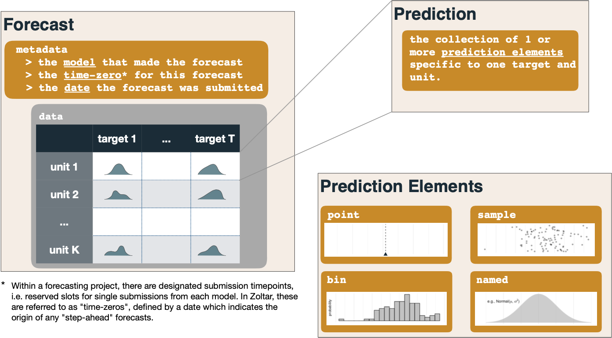

Zoltar data model¶
This page documents how Zoltar represents forecast data, and the various types of predictions that are supported. Each forecast is made for a particular time zero in the project, and contains some number of predictions, one or more for each combination of the project's units and targets. Zoltar supports the following eight prediction types, which we've found covers many forecasting applications. All predictions must pass a number of validity checks as documented in Validation. Each section has an example as represented in Zoltar's JSON format which was taken from the "Docs Example Project" demo project.
Overview¶
(Please refer to the diagram below. Note that it does not contain the quantile, mean, median, and mode prediction types.) A forecast is made up of metadata (the model that made the forecast, the time zero for the forecast, and the forecast's date of submission) plus the forecast's data as a set of predictions. Each prediction is a collection of one or more prediction elements specific to one target and unit. Each prediction element is of a particular type (or "class") (point, named, bin, sample, quantile, mean, median, and mode as described below).

Point predictions¶
Point predictions represent a single value. See here for details. In this example we see a prediction of 2.1 for the unit "loc1" and target "pct next week". Note that, like all predictions, the data type (in this case the float 2.1) must match the target's data type. (In this case it does; "pct next week" is a discrete target.)
{"unit": "loc1",
"target": "pct next week",
"class": "point",
"prediction": {
"value": 2.1
}
}
Named distributions¶
Named distributions represent distributions like normal, log normal, gamma, etc. See here for details. Here is an example in which a normal distribution ("norm" is the abbreviation) is specified for unit "loc1" and target "pct next week". Named predictions support up to three parameters (named "param1", "param2", and "param3") depending on the family. Here the normal distribution requires two parameters: mean ("param1") and sd ("param2"). "param3" is unused and not listed.
{"unit": "loc1",
"target": "pct next week",
"class": "named",
"prediction": {
"family": "norm",
"param1": 1.1,
"param2": 2.2
}
}
Bin distributions¶
Bin distributions represent binned distribution defined by inclusive lower bounds for each bin. See here for details. Example:
{"unit": "loc2",
"target": "pct next week",
"class": "bin",
"prediction": {
"cat": [1.1, 2.2, 3.3],
"prob": [0.3, 0.2, 0.5]
}
}
Sample distributions¶
Sample distributions represent samples taken for the unit and target. Here's an example:
{"unit": "loc3",
"target": "pct next week",
"class": "sample",
"prediction": {
"sample": [2.3, 6.5, 0.0, 10.0234, 0.0001]
}
}
Quantile distributions¶
Quantile distributions represent quantiles of the predictive distribution. For example:
{"unit": "loc2",
"target": "pct next week",
"class": "quantile",
"prediction": {
"quantile": [0.025, 0.25, 0.5, 0.75, 0.975],
"value": [1.0, 2.2, 2.2, 5.0, 50.0]
}
}
Mean, median, and mode predictions¶
These three types are expressed similar to point predictions above, except the class name varies. All validations and constraints that apply to point also apply to these three. Here's the point example from above, but with the mean class:
{"unit": "loc1",
"target": "pct next week",
"class": "mean",
"prediction": {
"value": 2.1
}
}